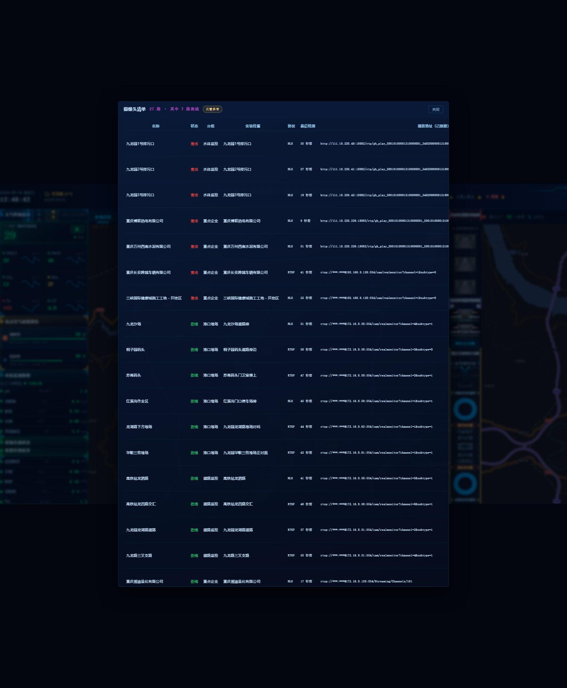
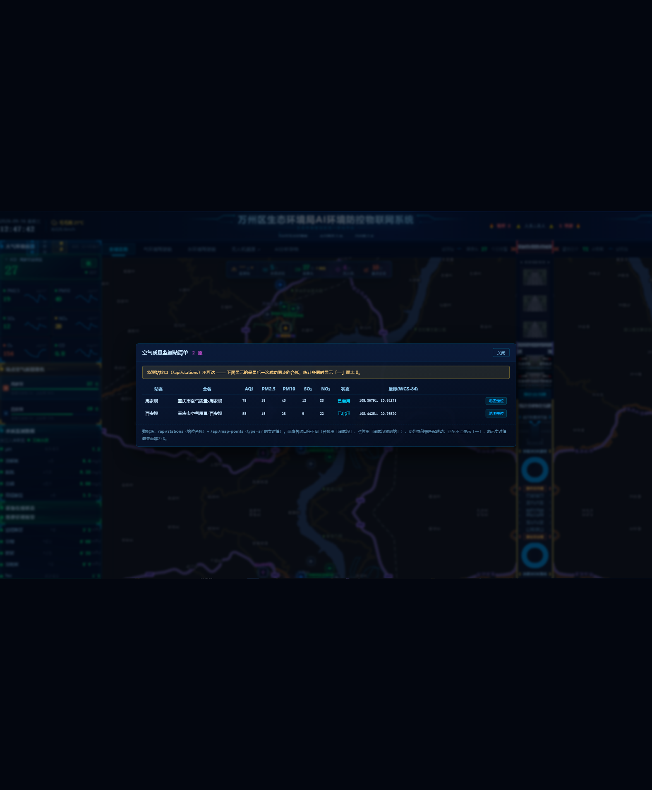
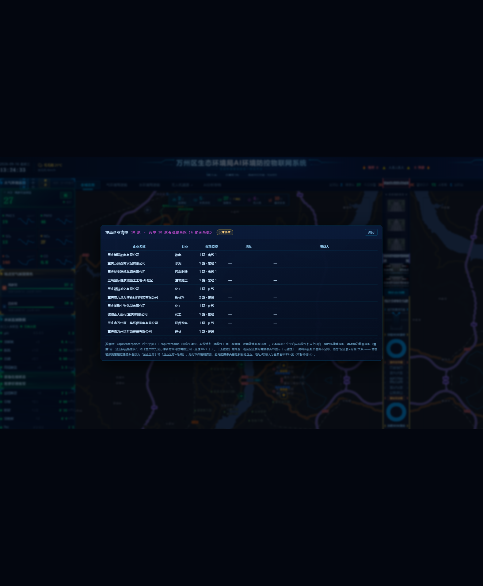

location（九龙万博两路流的 location 本来就是企业全称），不必改生产数据；
② 漏配「万源玻璃大门干道」（万源玻璃实际 2 路）；
③ 「N 家有离线」混淆了「巡检离线（自动恢复）」与「人工下线（不自动恢复）」；
④ 离线是实时量，本报告数字为 9/16 13:25 快照，9/17 16:39 已变为 6 家 / 7 路。
详见 docs/重点企业摄像头联动_复核勘误_20260917.html。
| KPI | 统计条 | 下钻行数 | 分组 | 只看异常 | 地图定位 | 结果 |
|---|---|---|---|---|---|---|
| 监测站 | 2 座 | 2 | — | — | ✅ | 通过 联动实时值：周家坝 AQI 78 / PM2.5 18 / PM10 45 / SO₂ 12 / NO₂ 28 |
| 水质点位 | 5 个 | 5 | 2 组：流域监测站 4 + 水质监测点 1 | — | ✅ | 通过 解决"5 由异类相加不可解释" |
| 摄像头 | 27 路 ·7 离线 | 27 | — | ✅ 27 → 7 | ✅ | 通过 20 条 URL 全部脱敏为 rtsp://***:***@；离线置顶 |
| 无人机 | 4 架 | 4 | — | — | ✅ | 通过 迁到通用骨架后角标「在飞 0 架」仍正常 |
| 重点企业 | 10 家 | 10 | — | ✅ 10 → 4 | —（无经纬度） | 通过 10 家有视频监控（数据治理后已补齐）、4 家有离线 |
| 降级语义（5 项统一） | 注入断链（拦截 fetch + 偏移 Date.now 使宽限期过期）后：2 座 → — 座（非 0），title=「监测站接口不可达，数值未知（非 0）」 |
通过 弹窗顶部出现降级条 + 保留最后 2 行数据 |
||||
| 发布门禁 | tsc --noEmit 0 错误 · build 7.73s · 资源 5/5 HTTP 200 + md5 磁盘==HTTP | 通过 | ||||


统计条 5 格（StatsCell · onClick）
│
▼
components/KpiDrilldownModal.tsx ← 唯一骨架：头部 / 降级条 / 分组 / 异常置顶+筛选 / 定位 / 口径脚注
▲ 列定义 + 分组 + 脚注
│
lib/kpiDrilldown.ts ← 5 份描述符（specMonitorStations / specWaterPoints /
│ specCameras / specEnterprises / specSikongDevices）
│
lib/maskUrl.ts · lib/sikongStatus.ts ← 脱敏单一出处 · 在飞判定单一出处
│
DashboardContext：useAvailability() ← 5 项统一「不可达 → —」语义（5min 宽限）
└── 轮询单一出处：streams / map-points / stations / enterprises / sikong
maskUrl.ts；在飞判定只在 sikongStatus.ts；列与分组只在 kpiDrilldown.ts；可达性只在 useAvailabilityuseAvailability() 返回新对象 → effect 依赖不稳定（已修）第一版把 5 个定时器的依赖写成 [xxxAvail]（hook 返回的对象）。对象每次渲染都是新引用 → 每个 effect 每次渲染都重跑：clearInterval + setInterval 反复重建，同时每次渲染都发一次请求（请求风暴），降级判定也被拖慢（实测注入断链后 14s 仍不转「—」）。
修法：改成返回 [available, mark]，mark 为 useCallback 稳定引用；effect 依赖用 [markXxx]。修后降级在下一个轮询周期（≤10s）正确生效。已在源码注释中标注「勿回退」。
实测 22/27 路 url 含 rtsp://用户:密码@…。已强制走 maskStreamUrl()。
实测复核：弹窗内 20 条去重 URL 的凭据段取值集合 = ["***:***"]，明文 0 条。
rtsp:\/\/[^\/@\s]+:[^\/@\s]+@ 把 ***:***@ 也判成"明文"（* 满足 [^/@\s]+）→ 误报"泄露"。校验脱敏必须比对凭据段取值，不能用"是否匹配 URL 形态"。
| # | 问题 | 原因（实测） | 处理 |
|---|---|---|---|
| a | 精确匹配漏配 2 家 | 两表名称差在空白：彼迪正天生化 (重庆) 有限公司 vs 彼迪正天生化(重庆)有限公司；三峡国际健康城施工工地 - 开挖区 vs …工地-开挖区 |
✅ 加 normName() 去半角/全角空白归一化 |
| b | 仍有 1 家无法匹配 → 已数据治理 | 企业「重庆市九龙万博新材料科技有限公司」的摄像头名为「重庆市九龙万博监控1 / 监控2」——命名本身不同（与全称无前缀关系） | 见下方「问题 5」：代码加前缀匹配 + 数据统一命名，已修复为 10/10 家有监控 |
| c | 联动数据源口径冲突 | 原用 map-points 的 camera 点位（报 8 家离线），而「摄像头」KPI 用 /api/streams（报 7 路离线）→ 同页面两个口径互相打脸 |
✅ 统一改用 /api/streams（与摄像头 KPI 同源），现为「9 家有监控、4 家有离线」，与摄像头 KPI 自洽 |
/api/stations 重复轮询（评估阶段已识别，本次消除）原先 CenterPanel（取数量）与 MapView（取列表）各轮询一次，均 10s。现统一到 DashboardContext 单例，每 10s 仅 1 次请求；MAP 监测站图标 🏠 复测正常。
| 项 | 内容 |
|---|---|
| 为什么不能只改数据 | 两路摄像头本来只差后缀（监控1 / 监控2）。若都改成企业全称，两行将完全同名同址，运维无法区分。故采用「代码放开匹配 + 数据补后缀」组合。 |
| 代码 | specEnterprises 匹配规则升级为：归一化精确匹配 → 失败再退化前缀匹配（摄像头名.startsWith(企业全称)，含最短长度护栏）。企业全称长且具体，前缀误配风险极低，且可覆盖"同一企业多台摄像头"这一常见命名。 |
| 数据 | 两路改名为「重庆市九龙万博新材料科技有限公司（通道102）」「…（通道201）」—— 通道号取自现有 url 的 /Streaming/Channels/<N>（事实来源，不臆造）。 |
| 改前备份 | /opt/jsc/backend/backups/streams_rename_20260916052330.json（含两条原始记录全文 + 回滚命令） |
| 副作用复核 | ① 视频流总数仍 27 ② 无重名冲突 ③ 地图 camera 点位 27 个未受影响（本次只改流名，未动点位）④ 摄像头 KPI 离线数仍 7 |
| 效果 | 重点企业下钻：10 家 · 其中 10 家有视频监控（4 家有离线）；无监控由 1 家 → 0 家；九龙万博行 = 「2 路 · 在线」 |

| 文件 | 类型 | 要点 |
|---|---|---|
src/app/lib/maskUrl.ts | 新增 | maskStreamUrl()（URL 脱敏单一出处）+ relTime()（相对时间） |
src/app/lib/kpiDrilldown.ts | 新增 | 5 份口径描述符（列/分组/脚注）+ normName() 归一化；含三条硬约束的注释 |
src/app/components/KpiDrilldownModal.tsx | 新增 | 通用骨架：分组 / 异常置顶+筛选 / 降级条 / 口径脚注 / 行内地图定位 / a11y |
src/app/lib/sikongStatus.ts | 改 | （上一轮新增）在飞判定单一出处，本次被 specSikongDevices 复用 |
src/app/context/DashboardContext.tsx | 改 | 新增 useAvailability()；stations / enterprises 单例轮询；5 项可达性；sikong 轮询重构为同一 hook |
src/app/components/CenterPanel.tsx | 改 | 删除本组件内 stations / enterprises 轮询；5 格接 onClick；摄像头统计条加「·7 离线」标注；挂 4 个新弹窗；locateRow() |
src/app/components/MapView.tsx | 改 | stations 改用 Context（消除重复轮询）；stName 加 id 兜底 |
src/app/components/SikongDeviceModal.tsx | 改 | 迁移到通用骨架（190 行 → 约 100 行，只留描述符装配 + FlyingBadge），角标/降级条行为不变 |
src/app/lib/api-types.ts | 改 | 新增 ⑦ StationRow / ⑧ EnterpriseRow 契约 |
| 批次 | 评估 | 实际 | 偏差说明 |
|---|---|---|---|
| P0 URL 脱敏基建 | 0.2d | 完成 | — |
| P0 通用下钻骨架 | 0.4d | 完成 | 额外承载了「分组 / 异常筛选 / 行内定位」三项能力 |
| P0 摄像头下钻 | 0.3d | 完成 | — |
| P0 监测站下钻 | 0.2d | 完成 | — |
| P0 水质点位下钻 | 0.2d | 完成 | — |
| P1 重点企业下钻 | 0.3d | 完成，多两轮返工 | 发现联动漏配（空白差异）+ 数据源口径冲突，各修一轮 |
| P1 Context 统一 | 0.3d | 完成 | 含 sikong 轮询一并重构（5 项同构） |
| P1 降级语义统一 | 0.3d | 完成，多一轮返工 | 自引入 hook 依赖 bug 导致降级不生效 → 已修并复验 |
| P2 行内地图定位 | 0.3d | 完成 | 复用既有 onLocate（合成一个仅用 lon/lat 的定位目标） |
| P2 缩略图延迟加载 | 0.3d | 未做 | 首版未渲染图片即无体积问题；实测弹窗文本 6KB，暂不需要 |
sikong.js 本轮未动），不涉及数据结构与迁移。/opt/jsc/frontend/backups/index.html.bak_pre_kpidrill2_20260916_124155（及 …pre_kpidrill_20260916_123907、…pre_badge_20260916_120531）。index.html（旧 assets 因 contenthash 仍在，无需回滚 assets）。| # | 事项 | 建议 |
|---|---|---|
| 1 | 企业台帐命名不一致 1 家 | 已修复 代码加前缀匹配 + 两路摄像头统一命名为「企业全称（通道N）」，现 10/10 家有监控（见「问题 5」） |
| 2 | 企业 location / contact 全为 null | 下钻「地址 / 联系人」列现显示「—」；需业务方补企业台账（不阻塞） |
| 3 | 流域监测站 4 个无水质参数 | 下钻已标注「未接入断面水质监测数据」；接入后自动显示，无需改代码 |
| 4 | 本次 10 个文件未提交 git | 建议连同上一轮一并提交（类型门禁相关改动需原子提交） |
| 5 | 视频轮播/视频流管理里，两路九龙万博卡片标题变长（含「（通道102）」） | 预期变化（可区分性换来的），如需精简可在视频流管理改回短名，但会失去企业联动 |
http://111.10.220.226:81/jsc/（SSH 隧道 -L 18080:127.0.0.1:80 本地验收）·
工具 scripts/ui-probe.mjstmp/kpi_drill_all.json · tmp/kpi_degraded_station.json · tmp/kpi_drill_camera.txt · tmp/_tsc10.txt / tmp/_build10.txt · tmp/check_mask.cjstmp/rename_streams.mjs（改名 + 自测）· tmp/probe_side_effects.mjs（副作用复核）· tmp/kpi_enterprise_after_rename.json · 备份 /opt/jsc/backend/backups/streams_rename_20260916052330.json